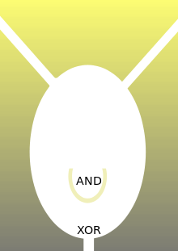
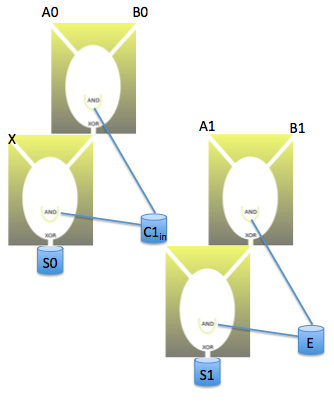

Binary addition¶
Fluidic half adder¶
Let’s design a very simple computer. It will take two inputs and add them.
Here’s the computer (source):

The inputs are the two tubes at the the top of the tank.
The computer can only add 2 numbers and those numbers can be 0 or 1. If you want to add 0 and 0, then you do nothing. If you want to add 0 and 1 or 1 and 0, then you pour a bucket of water into one of the tubes at the top. If you want to add 1 and 1, then you pour a bucket of water into one of the tubes and you get a friend to pour a bucket of water into the other tube at the same time.
How do you read the output? Imagine that there’s a bucket catching water that flows out of the “XOR” outlet at the bottom of the tank. You look to see if the “AND” bucket in the middle of the tank has water and you look at the “XOR” bucket. If the “AND” bucket has water, then the answer for the computation is 2. If the “XOR” bucket has water then the answer is 1. If neither of the buckets have water, then the answer is 0. Remember to dump out the water from the buckets every time you want to do a new calculation.
(Note that you have to make the “AND” bucket big enough so that it doesn’t overflow. There should be water in the “AND” bucket or in the “XOR” bucket or in neither, but not in both. “XOR” stands for exclusive or).
For example, if we add 0 and 0, you do nothing. Then you look at the buckets. They have no water in them, so 0 + 0 = 0.
If we add 0 and 1, you pour a bucket of water into one of the tubes. Suppose the input tubes are very long, so once the water enters the tank it’s like a jet stream going pretty fast (you have to climb a very tall ladder to get to the top where you can pour in the water). The water goes into the tank on one side and hits the opposite side missing the “AND” bucket and flows into the “XOR” bucket that we’re imagining is catching the water at the bottom. Then, you look at the buckets. The “AND” bucket will be empty and the “XOR” bucket will be full, so 0 + 1 = 1.
If we add 1 and 1, then the two streams of water entering the tank will deflect each other and fill the “AND” bucket and none of the water will get to the bottom of the tank. We see that the “AND” bucket is full, so 1 + 1 = 2.
Fluidic adder¶
We’ve constructed a computer out of water tubes and buckets that can add 2 numbers if those numbers happen to be 0 or 1 (this is called a half adder circuit). But what if you wanted to add say 1 and 2? What now?
First, we have to pick how many input tubes we’re going to have. This determines how big the inputs can be. Let’s say 4 input tubes, so that each of the 2 numbers we add can have 2 binary digits. (If we had say 30 input tubes, each of the two numbers that we add could have 30 / 2 = 15 binary digits).
With that setup, we can choose from 0 = 00, 1 = 01, 2 = 10, or 3 = 11 for each our inputs. And at most the sum could be 3 + 3 = 6 = \(2^2 + 2^1 + 2^0\) = 111. So we need 3 buckets to represent the output.
Another way to think about it is that our computer will represent all numbers (inputs and outputs) using 2 binary digits. The third bucket in the output is a boolean that tells us if there’s been an overflow error in our computation, i.e. the sum of the two numbers we tried to add is too big for the space that we’ve reserved to represent numbers.
For example, in the case of adding 3 + 3, or 11 + 11 in binary:
carry: 11
11
+11
---
110
We’d get an answer of 10 = 2 and the third bucket would be full, which would tell us not to trust the answer that we got.
Let’s label the least significant digit of the first input A0, the least significant digit of the second input B0 and the least significant digit of the sum S0. Similarly, call the second most significant digit of the inputs and the sum A1, B1 and S1 respectively. For example, if we add 1 = 01 and 2 = 10, then A0 = 1, A1 = 0, B0 = 0, B1 = 1 and the sum should be 3 = 11, so S0 should be 1 and S1 should be 1. Let’s call the third bucket of the output the “E” for error bucket, which is full when the sum is too big to store in 2 binary digits.
Here’s our computer:

If we wanted to add numbers with more binary digits, we could just imagine continuing the pattern by replacing the E bucket with a \(C2\_{in}\) bucket and having that go into another tank with tubes flowing out to a S2 bucket and a \(C3\_{in}\), which feeds into another replica and so on. Note that an E bucket is just like a \(Ci\_{in}\) bucket with the difference that we’re at the end of our computation for the E bucket.